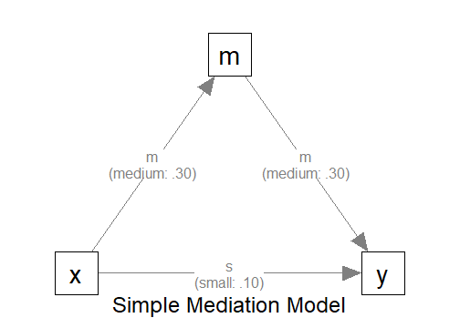

Sample Size Determination with Missing Data
2026-03-16
Source:vignettes/articles/n_from_power_mediation_missing_obs_simple.Rmd
n_from_power_mediation_missing_obs_simple.RmdIntroduction
This article illustrates how to do power analysis and sample size determination in the presence of missing data. The package power4mome will be used for illustration.
Prerequisite
Basic knowledge about fitting models by lavaan and
power4mome is required.
This file is not intended to be an introduction on how to use
functions in power4mome. For details on how to use
power4test(), refer to the Get-Started
article. Please also refer to the help page of
n_region_from_power(), and the article
on n_from_power(), which is called twice by
n_region_from_power() to find the regions described
below.
Scope
A simple mediation model of observed variables will be used as an example. Users new to the package are recommended to read the article on the steps for a path model with observed variables having a multivariate normal distribution (the default).
Set Up the Model and Test
Load the packages first:
Estimate the power for a sample size.
The code for the model:
model <-
"
m ~ x
y ~ m + x
"
model_es <-
"
m ~ x: m
y ~ m: m
y ~ x: s
"
The Model
Refer to this article on how to
set number_of_indicators and reliability when
calling power4test().
Specify the Missing Data Mechanism
Suppose that missing data is expected before data collection, maybe due to the nature of the topic or population. To make a realistic power analysis and sample size determination, the possibility of missing data needs to be taken into account.
In real research, it is difficult, sometimes impossible, to know in advance (a) the missing data mechanism and (b) the proportion of missing data.
Nevertheless, for sample size determination and power analysis, a reasonable guess based on previous studies or researcher’s expert knowledge would still be useful. If necessary, a conservative expectation, expecting the worst case scenario, can enhance the chance to have a sample size with sufficient power, even with missing data.
Although power4mome allows users to have control many
aspects of the missing data mechanism (see
Enders, 2022 for a detailed Introduction to the major mechanisms,
missing completely at random, missing at random, and missing not at
random) as well as the distribution of missing data in the data
cells, thanks to the excellent function ampute() from the
mice package, this article illustrates only a simple
scenario: values are missing completely at random (the chance that a
value is missing does not depend on any variable).
Data Processor
The package power4mome comes with some data processors, functions for processing the generated dataset before fitting a model to it. A full list of them can be found here.
Power analysis with missing data can be conducted through one of the
processors, missing_values(). It processes the generated
data by introducing missing values (removing some values by
replacing them with NA). The processed dataset, with
missing data, will then be used instead of the original dataset for
subsequent analyses, such as model fitting and power analysis.
An Example
Suppose we would like to estimate the power to test the indirect effect using Monte Carlo confidence interval. Without prior knowledge to suggest otherwise, we assume that values are missing completely at random (MCAR). To have a conservative estimate of the sample size required, we assume that about 30% of the case will missing data on one variable.
missing_values()
The data processor missing_values() is a wrapper of
ampute() from the mice package, with the
default values for some arguments different from those of
ampute(). If users adopts MCAR, the default, and only want
to specify the approximate proportion of cases with missing data on one
variable, then only the argument prop needs to be used.
For details on the missing data generation processes and other
available options, please refer to the help page of
missing_values(), mice::ampute(), and Schouten et al. (2018).
Set the Missing Data Mechanism Using process_data
This section illustrates how to set up the call to
power4test() using process_data and
missing_values(). We would like to check the model first.
Therefore, the test of indirect effect is not added for now.
out <- power4test(
nrep = 600,
model = model,
pop_es = model_es,
n = 100,
process_data = list(
fun = missing_values,
args = list(prop = .30)
),
iseed = 1234,
parallel = TRUE)How to Use process_data and
missing_values()
The argument process_data is used to specify the
function, as well as any arguments need, to process the
generated data.
The value must be a named list. The argument fun is a
required argument, which is the argument to be used to process the data
(missing_values in the example above).
If additional arguments are to be passed to this function, set them
to a named list for args, as shown above.
In the example above, the argument propr is set, telling
missing_values() the proportion of cases with missing
data.
Check The Generated Data
To print the details of the generated data, including the missing
data patterns, if any, use print with
data_long = TRUE:
print(out,
data_long = TRUE)This is part of the output:
#> ===== Missing Data Pattern =====
#>
#> Missing data is present
#>
#> P Prop m y x # V
#> .7028 O O O 3
#> .0959 O O - 2
#> .1013 O - O 2
#> .1000 - O O 2
#> V Prop .90 .90 .90
#>
#> Note:
#> - 'O': A variable has data in a pattern.
#> - '-': A variable has missing data in a pattern.
#> - P Prop: Proportion of each missing pattern.
#> - # V: Number of non-missing variable(s) in a pattern.
#> - V Prop: Proportion of non-missing data of each variables.If missing data is presence, the missing data patterns will be
printed, using mice::md.pattern() internally. As shown in
the output, about 30% of cases have missing data on one of the
variables. The proportions are only approximate for each pattern because
the mechanism is random.
Fit the Model by Full Information Maximum Likelihood (FIML)
Because of missing data, we would like to estimate the power when
using an estimator that handle missing data. One common method used in
lavaan is FIML (full information maximum likelihood).
The argument fit_model_args can be use to pass
arguments, as a named list, to the fit function, which is
lavaan::sem() by default.
To use FIML in lavaan::sem(), we use
missing = "fiml.x". "fiml.x" can be used in
this case because x is drawn from a normal distribution.
Therefore, we add the argument
fit_model_args = list(missing = "fiml.x") in the call to
power4test():
out <- power4test(
nrep = 600,
model = model,
pop_es = model_es,
n = 100,
process_data = list(
fun = missing_values,
args = list(prop = .30)
),
fit_model_args = list(missing = "fiml.x"),
iseed = 1234,
parallel = TRUE)We can verify that FIML is used by printing the results:
print(out)This is part of the output:
#> ============ <fit> ============
#>
#> lavaan 0.6-21 ended normally after 8 iterations
#>
#> Estimator ML
#> Optimization method NLMINB
#> Number of model parameters 7
#>
#> Number of observations 100
#> Number of missing patterns 4As shown in the printout, FIML was used and so lavaan
also reports the number of missing patterns. The sample size is the one
we specified, 100, despite missing data, confirming that all cases are
used when fitting the model.
Add the Test and Estimate Power
We now can add the test and estimate power. See this article
for details on the test function test_indirect_effect() and
how to set the argument test_fun and
test_args. R_for_bz(200) is used to set
R to the largest value less than 200 that is supported by
the method proposed by Boos & Zhang
(2000). 1
out <- power4test(
nrep = 600,
model = model,
pop_es = model_es,
n = 100,
process_data = list(
fun = missing_values,
args = list(prop = .30)
),
fit_model_args = list(missing = "fiml.x"),
R = R_for_bz(200),
ci_type = "mc",
test_fun = test_indirect_effect,
test_args = list(x = "x",
m = "m",
y = "y",
mc_ci = TRUE),
iseed = 1234,
parallel = TRUE)The rejection rate (power) for this example can be found by
rejection_rates():
rejection_rates(out)
#> [test]: test_indirect: x->m->y
#> [test_label]: Test
#> est p.v reject r.cilo r.cihi
#> 1 0.093 1.000 0.591 0.552 0.630
#> Notes:
#> - p.v: The proportion of valid replications.
#> - est: The mean of the estimates in a test across replications.
#> - reject: The proportion of 'significant' replications, that is, the
#> rejection rate. If the null hypothesis is true, this is the Type I
#> error rate. If the null hypothesis is false, this is the power.
#> - Some or all values in 'reject' are estimated using the extrapolation
#> method by Boos and Zhang (2000).
#> - r.cilo,r.cihi: The confidence interval of the rejection rate, based
#> on Wilson's (1927) method.
#> - Wilson's (1927) method is used to approximate the confidence
#> intervals of the rejection rates estimated by the method of Boos and
#> Zhang (2000).
#> - Refer to the tests for the meanings of other columns.For comparison, we can estimate the power when listwise deletion is
used. This is the default method of lavaan::sem().
Therefore, we can rerun the analysis with fit_model_args
removed:
out_listwise <- power4test(
nrep = 600,
model = model,
pop_es = model_es,
n = 100,
process_data = list(
fun = missing_values,
args = list(prop = .30)
),
R = R_for_bz(200),
ci_type = "mc",
test_fun = test_indirect_effect,
test_args = list(x = "x",
m = "m",
y = "y",
mc_ci = TRUE),
iseed = 1234,
parallel = TRUE)
rejection_rates(out_listwise)
#> [test]: test_indirect: x->m->y
#> [test_label]: Test
#> est p.v reject r.cilo r.cihi
#> 1 0.093 1.000 0.503 0.463 0.543
#> Notes:
#> - p.v: The proportion of valid replications.
#> - est: The mean of the estimates in a test across replications.
#> - reject: The proportion of 'significant' replications, that is, the
#> rejection rate. If the null hypothesis is true, this is the Type I
#> error rate. If the null hypothesis is false, this is the power.
#> - Some or all values in 'reject' are estimated using the extrapolation
#> method by Boos and Zhang (2000).
#> - r.cilo,r.cihi: The confidence interval of the rejection rate, based
#> on Wilson's (1927) method.
#> - Wilson's (1927) method is used to approximate the confidence
#> intervals of the rejection rates estimated by the method of Boos and
#> Zhang (2000).
#> - Refer to the tests for the meanings of other columns.In this scenario, the power is reduced by nearly 10% if listwise deletion is used.
Using process_data in Other Functions
Other functions that make use of power4test() can also
use the arguments process_data and
fit_model_args.
For example, the output above, with ordinal indicators, can be used
directly by n_from_power() to find a sample size given a
target power:
n_power <- n_from_power(
out,
target_power = .80,
final_nrep = 2000,
seed = 1357
)The output with ordinal indicators can also be used directly by
n_power_region() to find a region of sample sizes given a
target power:
n_power_region <- n_region_from_power(
out,
seed = 1357
)The quick functions, described in these articles, also
support the process_data and fit_model_args
arguments. They are set in the same way as in
power4test()
This is an example for estimating the power for a specific sample size:
q_power <- q_power_mediation_simple(
a = "m",
b = "m",
cp = "s",
process_data = list(
fun = missing_values,
args = list(prop = .30)
),
fit_model_args = list(missing = "fiml.x"),
target_power = .80,
nrep = 600,
n = 100,
R = R_for_bz(200),
seed = 1234
)This is an example of finding a sample size given a target power
(mode "n"):
q_power_n <- q_power_mediation_simple(
a = "m",
b = "m",
cp = "s",
process_data = list(
fun = missing_values,
args = list(prop = .30)
),
fit_model_args = list(missing = "fiml.x"),
target_power = .80,
R = R_for_bz(200),
final_nrep = 2000,
seed = 1234,
mode = "n"
)